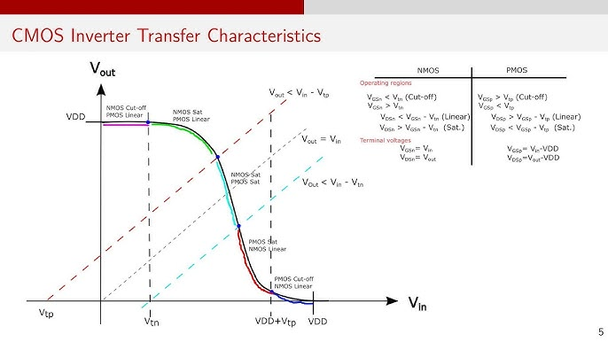
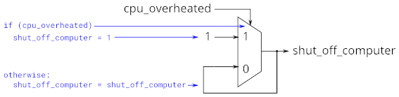
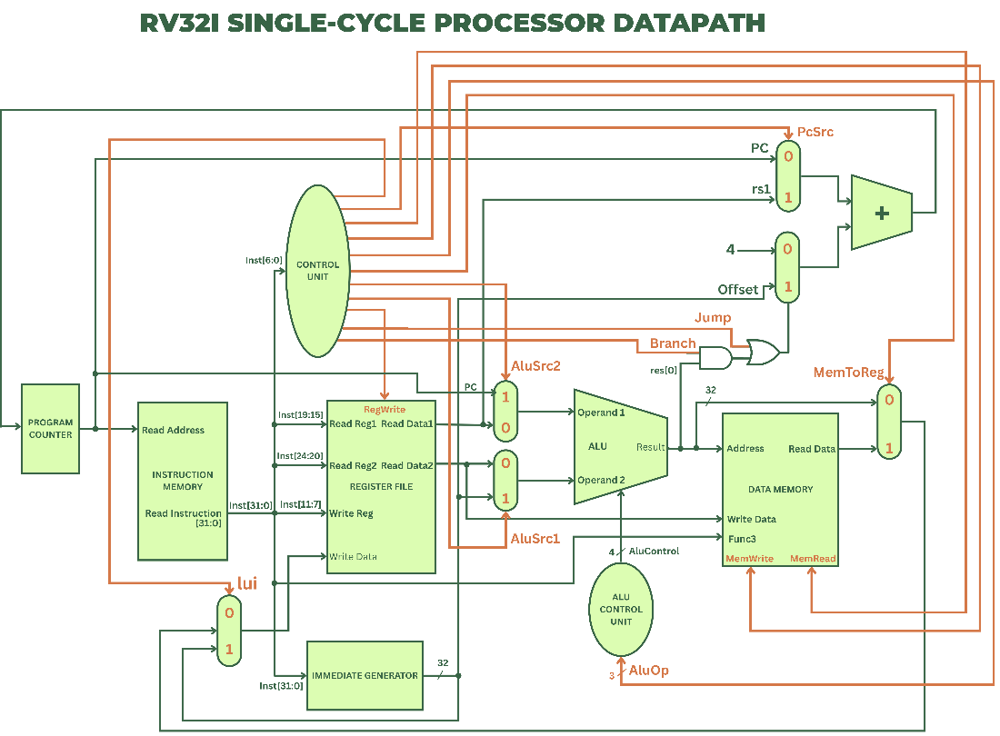
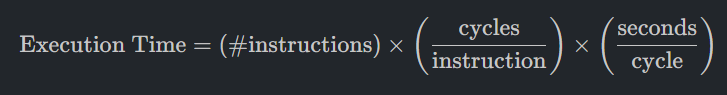

Both are models for synchronous sequential circuits — circuits whose output depends not just on current inputs but also on history (stored as "state").
The only difference between Mealy and Moore is the output logic's inputs — everything else (register, next-state logic) is identical in structure.
Both machines are 6-tuples (Q, Σ, O, δ, λ, q₀):
Table 1.1: Symbols of the six-tuple definition of Mealy and Moore machines
| Symbol | Meaning |
|---|---|
| Q | finite set of states |
| Σ | input alphabet |
| O | output alphabet |
| δ | next-state function: Q × Σ → Q |
| λ | output function |
| q₀ | initial state |
Mealy Machine — output depends on present state and present input: λ: Q × Σ → O
Moore Machine — output depends only on present state: λ: Q → O
This is the automata-theory root of the electronics distinction below.
Table 1.2: State-diagram notation of Mealy and Moore machines
| Mealy | Moore | |
|---|---|---|
| Output shown on | edges (transitions), as input / output | states (nodes), as state / output |
| State circle contains | just the state name | state name + output value |
| # of states (typically) | fewer | more (may need extra states just to separate outputs) |
Example labeling convention:
Mealy state table (output tied to transition):
Table 1.3: Mealy state table (output tied to the transition)
| Present State | Next State (in=0) | Output (in=0) | Next State (in=1) | Output (in=1) |
|---|---|---|---|---|
| →a | b | x1 | c | x1 |
| b | b | x2 | d | x3 |
| c | d | x3 | c | x1 |
| d | d | x3 | d | x2 |
Moore state table (output tied to state, one column):
Table 1.4: Moore state table (output tied to the state)
| Present State | Next State (in=0) | Next State (in=1) | Output |
|---|---|---|---|
| →a | b | c | x2 |
| b | b | d | x1 |
| c | c | d | x2 |
| d | d | d | x3 |
This is the part that matters most for actually building the circuit:
Flip-flop excitation tables (needed at step 5):
Table 1.5: Flip-flop excitation tables
| Q(t) → Q(t+1) | D | JK | T |
|---|---|---|---|
| 0 → 0 | 0 | 0X | 0 |
| 0 → 1 | 1 | 1X | 1 |
| 1 → 0 | 0 | X1 | 1 |
| 1 → 1 | 1 | X0 | 0 |
(X = don't care)
Detect three consecutive 1's on serial input x (overlapping allowed).
Table 1.6: State table of the Moore "111" sequence detector
| Present State | Next (x=0) | Next (x=1) | Output Z |
|---|---|---|---|
| Initial | Initial | Got-1 | 0 |
| Got-1 | Initial | Got-11 | 0 |
| Got-11 | Initial | Got-111 | 0 |
| Got-111 | Initial | Got-111 | 1 |
→ 4 states needed. Output Z=1 only while sitting in Got-111, so it stays high for a full clock cycle and only changes at the clock edge — clean, glitch-free.
Table 1.7: State table of the Mealy "111" sequence detector
| Present State | Next (x=0) | Out (x=0) | Next (x=1) | Out (x=1) |
|---|---|---|---|---|
| Initial | Initial | 0 | Got-1 | 0 |
| Got-1 | Initial | 0 | Got-11 | 0 |
| Got-11 | Initial | 0 | Got-11 | 1 |
→ Only 3 states (Got-111 is never needed as a separate state — the detection is the transition). Output pulses for one clock period, asserted the moment the 3rd 1 arrives — one cycle earlier than the Moore version.
This example is the classic illustration of the state-count trade-off.
Table 1.8: Practical comparison of Mealy and Moore machines
| Aspect | Mealy | Moore |
|---|---|---|
| Output depends on | state + input | state only |
| # of states | usually fewer | usually more |
| Output timing | can change mid-cycle, asynchronously with input (same clock cycle as the input causing it) | changes only at clock edges, one cycle later than the triggering input |
| Output stability | can glitch if input is noisy/asynchronous (output glitch / false output) | glitch-free — output is registered behavior |
| Response speed | reacts faster (combinational path to output) | reacts one clock cycle later |
| Interfacing with other synchronous blocks | trickier — output not aligned to clock | easier — output is clean and stable for the whole cycle |
| Hardware | typically less logic (fewer FFs) | typically more logic (extra states → extra FFs), and output decode logic can be larger |
Important nuance: A Mealy machine's output changes combinationally the instant the input changes (within the same clock cycle) — this is fine and even desirable in datapaths where you want a fast reaction, but is dangerous if x is asynchronous/glitchy, since any glitch on x propagates straight to the output. Moore outputs are always "clean" because they only depend on the registered state.
Most real synchronous digital systems are built predominantly as Moore-style blocks (or Mealy blocks with registered outputs) specifically to avoid these timing hazards — output glitches wreak havoc when feeding other clocked logic.
Moore → Mealy: copy the Moore output associated with a state onto every incoming transition edge that leads to that state, in the Mealy table.
Mealy → Moore: for each state, check how many distinct outputs it produces (across its outgoing edges). If more than one, split that state into multiple states (one per distinct output value) so a single output can be tied to each. This is why the Mealy→Moore conversion frequently increases the state count (and hence flip-flop count).
Example splitting (from the ECE-152 style problem): Mealy state b produces outputs {0, 1} on different edges → split into b0 and b1 in the Moore machine.
Skeleton pattern used almost universally for FSM coding — three always blocks (state register, next-state logic, output logic):
module fsm_111_detector_moore (
input wire clk,
input wire rst_n,
input wire x,
output reg z
);
localparam INIT=2'd0, GOT1=2'd1, GOT11=2'd2, GOT111=2'd3;
reg [1:0] state, next_state;
// (1) State register — sequential
always @(posedge clk or negedge rst_n)
if (!rst_n) state <= INIT;
else state <= next_state;
// (2) Next-state logic — combinational
always @(*) begin
case (state)
INIT: next_state = x ? GOT1 : INIT;
GOT1: next_state = x ? GOT11 : INIT;
GOT11: next_state = x ? GOT111 : INIT;
GOT111: next_state = x ? GOT111 : INIT;
default: next_state = INIT;
endcase
end
// (3) Output logic — combinational, function of STATE ONLY (Moore)
always @(*) begin
z = (state == GOT111);
end
endmoduleFor a Mealy version, z would instead be computed in a block that also reads x:
always @(*) z = (state == GOT11) && x; // output depends on state AND input
Note this collapses GOT111 away entirely, matching the 3-state Mealy table in Section 1.6.
Table 1.9: Quick-recall comparison of Mealy and Moore machines
| Question | Mealy | Moore |
|---|---|---|
| Output tied to? | Edge (transition) | Node (state) |
| Formula | λ(Q, Σ) → O | λ(Q) → O |
| States for same behavior | fewer | more |
| Output latency vs. input | same cycle | +1 clock cycle |
| Risk of glitches | yes, if input is async | no |
| Typical use | fast reactive control (e.g. handshake protocols) |
Each problem below is deliberately built around a constraint or twist that a plain "detect 1011" question doesn't test — state minimization under ambiguity, don't-cares, multi-pattern sharing, error tolerance, non-binary alphabets, protocol realism, or the limits of FSMs entirely. For each: the twist, the state design (Mealy and/or Moore as appropriate), and the interview angle they're really probing.
Ask: Detect 1011 in a serial stream, overlap allowed (...101011... should fire at both possible positions). Give the minimum-state Mealy AND Moore FSMs, and justify why the counts differ.
Twist: most people get the Mealy machine right but botch the Moore version — they think Moore always needs exactly one more state. Show them it needs exactly one only if the detected substring is not itself a prefix-loop.
Mealy (4 states, min):
Table 2.1: Mealy state table of the overlapping "1011" detector
| State | meaning (longest suffix seen) | in=0 | in=1 |
|---|---|---|---|
| →S0 | "" | S0 / 0 | S1 / 0 |
| S1 | "1" | S0 / 0 | S1 / 0 |
| S2 | "10" | S3 / 0 | S1 / 0 |
| S3 | "101" | S0 / 0 | S4 / 1 |
| S4 | "1011"→ same as "1" (overlap) | S0/0 | S1/0 |
Actually S4 collapses into S1 since after emitting 1 on ...1011, the trailing 1 is a valid new prefix — so S4 ≡ S1, giving only 4 distinct states (S0–S3), with the S3→S1-on-1 edge carrying the output.
Moore: needs a 5th, dedicated "match" state because Moore output must be pinned to a state, and that state can't be reused as "S1" since S1 has output 0 and the match state needs output 1 — even though behaviorally they're the same next-state logic. This is the crux interview point: Moore's 1-extra-state tax is exactly the price of decoupling output from transition.
Interview angle: tests whether the candidate actually understands why Moore costs more states (Mealy's Myhill-Nerode equivalence classes on (state) can double as (state,output) pairs; Moore's can't) — not just a memorized rule of thumb.
Ask: Detect the pattern 1X1 where X can be 0 or 1 (i.e., accept both 101 and 111). Then generalize to 11X0.
Twist: naive candidates try to build a "3-valued alphabet" FSM. The trick is realizing a don't-care in the pattern is not a don't-care in the input alphabet — the input is still binary; you just need to fan out both edges from the wildcard state to the same next state.
State table (Mealy) for 1X1:
Table 2.2: Mealy state table of the 1X1 wildcard detector
| State | in=0 | in=1 |
|---|---|---|
| →S0 (saw nothing useful) | S0/0 | S1/0 |
| S1 (saw "1") | S2/0 | S2/0 |
| S2 (saw "1X") | S0/0 | S1/1 |
Note S2 on input 1 must re-check for overlap (...1X1 ending in 1 could start a new 1__ window) → goes to S1, not S0.
Interview angle: tests whether "don't care" is understood as a don't-care on which transition you take, not a third logic value on the wire. This generalizes directly to protocol/packet-filter FSMs (e.g., "ignore reserved bits") which real interview questions at networking-adjacent companies (Cisco, Juniper, Broadcom) like to ask.
Ask: Build a single FSM (Mealy) that raises hit1 when it sees 1101 and hit2 when it sees 1010, sharing as many states as possible, and prove your design is state-minimal (use the equivalence-class / partitioning argument, not just "I drew it and it looked small").
Twist: this forces explicit state minimization via Moore's/Mealy's row-equivalence (partition refinement) algorithm — most textbook problems never require you to prove minimality, only to draw a diagram.
Approach they should demonstrate:
Interview angle: this is really an FSM state-minimization algorithm question wearing a sequence-detector costume — common at companies that care about formal methods / EDA background (synthesis, Cadence/Synopsys-adjacent roles) — relevant to VLSI/EDA interests.
Ask: Same 4-bit pattern detector, but x comes from a button/off-chip signal not synchronized to your clock. Design the correct circuit.
Twist: the "gotcha" is that 90% of candidates will just draw the FSM state diagram and call it done — completely ignoring that an asynchronous input sampled directly by flip-flops can cause metastability. The correct answer requires:
// 2-FF synchronizer — mandatory before any async input reaches FSM logic
reg x_meta, x_sync;
always @(posedge clk or negedge rst_n)
if (!rst_n) {x_sync, x_meta} <= 2'b00;
else {x_sync, x_meta} <= {x_meta, x};Interview angle: classic "trap" question at hardware-heavy companies (Nvidia, Qualcomm, Intel, any ASIC/VLSI shop) — they want to see if you reflexively think about clock domain crossing (CDC) the moment "external input" is mentioned, not just FSM theory. Directly relevant to your VLSI/EDA background.
Ask: Detect 1011 but also fire (with a separate near_miss output) if the last 4 bits differ from 1011 in exactly one position (i.e., Hamming distance 1: 0011, 1111, 1001, 1010).
Twist: this is explicitly not a plain-DFA problem — it requires tracking a small amount of "how many mismatches so far" bookkeeping, which pushes the state count up combinatorially and is a good test of whether someone can bound state explosion.
Design approach:
Table 2.3: State transitions of the error-tolerant "1011" detector
| State (pos, err) | on bit matching expected | on bit mismatching expected |
|---|---|---|
| (0,0) | → (1,0) | → (1,1) |
| (1,0) | → (2,0) | → (2,1) |
| (1,1) | → (2,1) | → dead/reset |
| (2,0) | → (3,0) | → (3,1) |
| (2,1) | → (3,1) | → dead |
| (3,0) | → (4,0)=hit | → (4,1)=near_miss |
| (3,1) | → (4,1)=near_miss | → dead |
Interview angle: this is basically a hardware Levenshtein/Hamming-window matcher — a real building block in DNA sequence search accelerators, network intrusion detection (approximate string matching in hardware), and fuzzy protocol framing. Tests whether someone can generalize an FSM's "memory" to encode more than just position.
Ask: A vending machine accepts nickels (5) and dimes (10) one at a time (input alphabet = {N, D}, not {0,1}!). Item costs 15. Design a Moore machine that outputs dispense the instant total ≥ 15, and separately compute change owed.
Twist: breaks the "sequence detector = binary string" assumption entirely — the input alphabet is non-binary (or could even be a bus-width integer), which is exactly how a lot of real interview questions phrase FSMs (elevator controllers, traffic lights, vending machines) without ever saying "binary."
State table (Moore — output = money-so-far is a clean state-only property, ideal Moore use case):
Table 2.4: Moore state table of the vending-machine coin detector
| State (¢ so far) | in=N(+5) | in=D(+10) | Output |
|---|---|---|---|
| →0 | 5 | 10 | — |
| 5 | 10 | 15 | — |
| 10 | 15 | 20(≡15, +5 change) | — |
| 15 | 15 (stay, ignore/return coin) | 15 | dispense |
| 20 | 15* | 15* | dispense + 5¢ change |
(after dispensing, machine resets to state 0, refunding excess as change — note this requires an output that's a function of the transition into the state, which pushes you to argue: is "change owed" better modeled as Mealy (computed exactly on the transition that causes overpayment) even though "dispense" is naturally Moore? Good candidates will propose a hybrid Mealy/Moore machine — Moore for dispense, Mealy for change_amount — and justify why real designs often mix both.)
Interview angle: the "hybrid FSM" insight (some outputs Moore-style, some Mealy-style, same state machine) is a very "out of the box" but entirely legitimate answer that most textbook treatments never mention — strong signal of deeper understanding, and it's a genuinely common real-world pattern (e.g., a UART controller might have a Moore busy flag and a Mealy byte_ready pulse from the same states).
Ask: Implement the actual HDLC framing detector: the flag byte is 01111110 (six 1's between 0's). Sender bit-stuffs a 0 after every 5 consecutive 1's in the payload. Your receiver FSM must, on a live serial bit stream, simultaneously:
Twist: this is a real, standardized protocol FSM (used in HDLC/PPP framing and CAN-bus-style bit destuffing) — not an invented textbook pattern — and it requires counting runs of 1's up to a cap while distinguishing three different exit conditions on the same counter.
State design (Mealy, counting run-length of 1's):
Table 2.5: Mealy state design of the HDLC run-length detector
| State (consecutive 1's seen) | in=0 | in=1 |
|---|---|---|
| →A0 | A0 / — | A1 / — |
| A1 | A0 / — | A2 / — |
| A2 | A0 / — | A3 / — |
| A3 | A0 / — | A4 / — |
| A4 | A0 / — | A5 / — |
| A5 (five 1's seen) | A0 / disc (this 0 was stuffed) | A6 / — |
| A6 (six 1's seen) | A0 / flag | A7 / — |
| A7 (seven+ 1's) | A0 / error | A7 / error (stay, keep flagging) |
Interview angle: networking/hardware companies (protocol-offload ASIC teams, NIC vendors) ask almost exactly this. Tests: (1) can you count bounded runs with a linear chain of states instead of a counter register (a valid, common real-RTL technique), (2) can you correctly distinguish the exit bit (0 vs 1) at each count threshold, (3) do you know real framing protocols use exactly this mechanism (bonus points if you know CAN bus does the same with 5-identical-bit stuffing).
Ask: Design an FSM that raises hit whenever the last N bits received form a palindrome, for arbitrary N (not fixed at design time).
Twist — the real point of this question: for a fixed, known N (say N=4), this is trivial — a plain shift-register-compare FSM with 2^N states (or fewer with symmetry) works fine, since a fixed-length palindrome check is just an equality check on a bounded window:
palindrome(b3 b2 b1 b0) = (b3==b0) && (b2==b1)
— literally combinational logic on a 4-bit shift register, no real "memory" beyond the window itself; that's a legitimate, small Moore/Mealy machine (2^4 = 16 states max, fewer if you dedupe by palindrome-ness).
But if N is unbounded / arbitrary / part of the input (e.g., "detect when the entire stream received so far is a palindrome," or "detect palindromes of any length ending here"), a finite-state machine provably cannot do it — this requires unbounded memory that grows with input length, i.e., it needs a stack / pushdown automaton, not an FSM. This is the textbook "L = {ww^R}" non-regular-language argument (provable by the Pumping Lemma for regular languages).
Correct interview answer: "For fixed N, here's the FSM (draw the 2^N-ish state Mealy machine). For unbounded N, this language isn't regular — no FSM can decide it in general; you'd need a stack-based recognizer (PDA) or, in hardware terms, an actual RAM/stack structure feeding a comparator, not a pure fixed-state FSM."
Interview angle: this is a favorite for senior/staff-level interviews precisely because it tests whether a candidate will blindly start drawing states or first ask "is N fixed?" and correctly invoke the theoretical limit of finite automata (ties directly back to the automata-theory formalism — regular languages vs. context-free languages) before writing any RTL. It's the single best "out-of-the-box" trap on this list.
Table 2.6: Summary of the eight sequence-detector problems
| # | Detector | Core twist | Model used |
|---|---|---|---|
| 1 | 1011 overlapping | Prove min-state count differs between Mealy/Moore | Both |
| 2 | 1X1 wildcard | Don't-care is a transition fan-out, not a 3rd logic value | Mealy |
| 3 | 1101 or 1010 | State minimization via partition refinement, shared prefixes | Mealy |
| 4 | 0110 on async input | CDC / synchronizer required before any FSM logic | Mealy + sync FF chain |
| 5 | 1011 ± 1 bit error | State = (position, error-count) tuple; bounded fuzzy matching | Mealy |
| 6 | Vending machine (N/D coins) | Non-binary alphabet; hybrid Mealy+Moore outputs | Hybrid |
| 7 | HDLC flag/stuff/abort | Real protocol; bounded run-length counting via state chain | Mealy |
| 8 | Arbitrary-length palindrome | FSMs can't do it — needs a PDA; know when not to draw states | N/A — trick question |
Use #4, #7, and #8 if you want to signal hardware/protocol maturity beyond automata-theory bookwork; use #3 and #5 if the interview is leaning more toward algorithms/formal-methods; #6 is a good one for "explain FSMs to a non-EE" style questions.
A consolidated map of every concept, term, and problem type the lecture works through, with the governing equation for each situation.
Table 3.1: Foundational terms of static timing analysis
| Term | Meaning |
|---|---|
| Contamination delay (Tcd) | Time from input change until the output starts changing (starts leaving its old value). |
| Propagation delay (Tpd) | Time from input change until the output reaches its new steady value. |
| Setup time (Tsu) | Minimum time data must be stable before the active clock edge. |
| Hold time (Th) | Minimum time data must remain stable after the active clock edge. |
| Clock-to-Q delay (Tcq) | Same as propagation delay, but specific to a flip-flop: time from clock edge to Q output becoming valid. |
| Clock skew (Tskew) | Difference in arrival time of the same clock edge at two different flip-flops, due to wire/interconnect parasitics (R, C differ by path length). Tskew = T2 − T1 (later arrival − earlier arrival). |
| Clock jitter | Cycle-to-cycle variation in the period of the clock at a single point (not a location-to-location difference like skew). Not used in the numeric STA equations in this lecture — conceptual only. |
Rule of thumb for a single edge: the clock edge "looks backward" (checks setup) and "looks forward" (checks hold). If data isn't stable across that ±window, the flop's output is undefined/metastable.
For Flop1 → combinational logic → Flop2, same clock at both flops:
Setup (max-delay) check — determines minimum clock period:
Tclk ≥ Tcq(1) + Tcomb + Tsu(2)
Hold (min-delay) check — independent of Tclk:
Th(2) ≤ Tcq(1) + Tcomb
If the clock arrives at Flop2 later than at Flop1 by Tskew (i.e., Flop2's clock is delayed):
Setup:
Tclk + Tskew ≥ Tcq(1) + Tcomb + Tsu(2)
⇒ Tclk ≥ Tcq(1) + Tcomb + Tsu(2) − Tskew
Hold:
Th(2) ≤ Tcq(1) + Tcomb − Tskew
General rule used throughout the lecture:
Rule: you can only walk through directly connected flops (Flop1→Flop2, Flop2→Flop3) — never skip a stage. For each adjacent pair, treat the upstream flop's input as "already stable" and derive independently:
Tclk' ≥ Tcq(1) + Tcomb(1) + Tsu(2) − Tskew(2)
Tclk'' ≥ Tcq(2) + Tcomb(2) + Tsu(3) − Tskew(3)
Final answer:
Tclk(min) = max(Tclk', Tclk'')
Similarly compute Th for each stage separately (each uses only the delay terms, no Tsu, and subtracts its own destination skew).
Special case — feedback loops (output of last flop feeds back to first): Walk the path in both directions:
Key trick: a negative-edge clock = positive-edge clock inverted, which is equivalent to shifting the positive clock by −T/2 (never use +T/2, since it gives an artificially small/incorrect Tclk when solving the inequality).
Treat the inverter as contributing a skew of −Tclk/2 (plus any of its own real gate delay if specified):
Tclk ≥ Tcq(1) + Tsu(2) − (−Tclk/2)
⇒ (3/2)·Tclk ≥ Tcq(1) + Tsu(2) [after solving out the −Tclk/2 term]
Worked pattern from the lecture: if Flop1 is positive-edge and Flop2 is negative-edge:
Tclk ≥ Tcq(1) + Tsu(2) − (−Tclk/2) Tclk ≥ Tcq(1) + Tsu(2) + Tclk/2 Tclk − Tclk/2 ≥ Tcq(1) + Tsu(2) Tclk/2 ≥ Tcq(1) + Tsu(2) → Tclk ≥ 2·(Tcq1 + Tsu2)
(No hold violation possible in this configuration in the lecture's examples, because the negative edge always "looks ahead" into a region where data is already stable.)
Multiple inverters in the clock path: each inverter contributes −Tclk/2, but any odd number of −Tclk/2 terms collapses to a single −Tclk/2 (since −Tclk is equivalent to 0 shift); you then also add each inverter's own physical gate delay (ΣTdelay of the inverters) as ordinary combinational delay:
Tclk ≥ 2·(Tdelay2 + Tcq1 + Tdelay1 + Tsu2 − Tdelay3)
(exact form depends on where each inverter sits — always separate "phase-shift contribution" from "real gate delay contribution").
For a latch, setup/hold are not measured relative to the start of the transparent level — they are measured relative to the latching edge (the edge where the transparent window closes, i.e., where "sample" transitions to "hold").
Data must be stable from (Tlatch_edge − Tsu) to (Tlatch_edge + Th)
Same violation logic as a flip-flop, just anchored to the closing edge of the transparent phase instead of the flop's single clock edge.
Once Tclk(min) is found:
Fclk(max) = 1 / Tclk(min)
(Watch units — ns → GHz/MHz conversion, e.g., 1/14ns ≈ 71.4 MHz.)
Because each flop's D input is internally tied (toggle mode), input is always stable — setup/hold never come into play. Instead the constraint is avoiding skipped counts:
Tclk ≥ Σ (Tcq of each stage in the ripple chain)
This is purely a propagation-delay chain, not a setup/hold problem.
When each element is given a min and max delay (e.g., wire, buffer, Tcq all specified as ranges):
For the setup/Tclk(min) computation (want Tclk to be provably large enough):
Tclk(min) = Σ(max delays) + Tsu − Σ(min skew)
For the hold check (want Th to be provably small enough):
Th(max allowed) = Σ(min delays) − Σ(max skew)
Setup Slack / Hold Slack:
Setup Slack = Tclk(actual) − Tclk(required) [negative = violation]
Hold Slack = Th(required) − Th(actual) [negative = violation]
A negative slack tells you exactly how much the offending parameter (usually Tsu or Th) must be reduced/increased to close the violation.
Setup violation ⇒ Tsu > Tclk − Tdata_delay. To fix (increase the allowable window, i.e., increase Tclk − Tdata):
Hold violation ⇒ Th > Tdata_delay − Tskew. Hold is independent of Tclk, so clock speed changes never help. Fixes:
Complementary Metal-Oxide-Semiconductor (CMOS) is the dominant technology used to build modern digital integrated circuits. It is "complementary" because it utilizes both nMOS and pMOS transistors to perform logic functions.
Pswitching = α · CL · VDD2 · f
The Voltage Transfer Characteristic (VTC) graph plots the output voltage (Vout) against the input voltage (Vin). Intuitively, it describes how the transistors transition through different regions of operation:

Ground bounce is a phenomenon where the voltage level of the local ground rail fluctuates due to rapid switching currents in digital circuits.
Any logical expression can be implemented in CMOS by constructing two complementary networks: a Pull-Down Network (PDN) and a Pull-Up Network (PUN).
The CMOS switching power equation, which represents the power consumed by charging and discharging load capacitances during signal transitions, is:
Pswitching = α · CL · VDD2 · f
The components of this equation are defined as follows:
There are three types of assignments in Verilog:
An if statement usually creates a 2-to-1 multiplexer, selecting one input if the condition is true, and the other input if the condition is false.
When designing circuits, you must think first in terms of circuits:
What you must not do is write the code first, then hope it generates a proper circuit.
Syntactically-correct code does not necessarily result in a reasonable circuit (combinational logic + flip-flops). The usual reason is: "What happens in the cases other than those you specified?". Verilog's answer is: Keep the outputs unchanged.
This behaviour of "keep outputs unchanged" means the current state needs to be remembered, and thus produces a latch. Combinational logic (e.g., logic gates) cannot remember any state. Watch out for Warning (10240): ... inferring latch(es)" messages. Unless the latch was intentional, it almost always indicates a bug. Combinational circuits must have a value assigned to all outputs under all conditions. This usually means you always need else clauses or a default value assigned to the outputs.

This is the circuit described by the code, not the circuit you want to build.
always @(*) begin
if (cpu_overheated)
shut_off_computer = 1;
endThe RTL to GDSII flow is the comprehensive process of transforming a high-level digital design into a physical layout format (GDSII) ready for integrated circuit (IC) fabrication. This flow is generally divided into Front-End (logical) and Back-End (physical) stages.
Physical design transforms the logical netlist into a geometric representation.
Semiconductor memories are specialized circuits designed to store and retrieve large quantities of digital information at high speeds. They often account for the majority of transistors in modern systems-on-chip.
Semiconductor memories are primarily categorized by their storage mechanism and access method:
Large memories are organized as two-dimensional arrays of bit cells.
Peripheral circuits are shared among many memory cells to manage data flow and logic:
Flash memory has become the dominant non-volatile mass storage medium. It operates using floating-gate transistors.
From <https://notebook.google.com/notebook/2fcf8e5f-0882-46c2-b9b4-5332be3f9a93?authuser=1>
In post-silicon validation, you cannot simply look at a simulation waveform; you must sample real signals on running hardware without altering the circuit's timing behavior.
Implementing closed-loop feedback control in digital logic requires managing precision, latency, and dynamic range.
Interfacing asynchronous real-world sensors and external UART communication to an internal FPGA clock domain is a favorite topic in GlobalFoundries technical rounds.
Table 8.1: Maze-solver project context versus post-silicon validation topics
| Technical Domain | Maze Solver Project Context | How GlobalFoundries Evaluates It in Post-Si |
|---|---|---|
| Signal Integrity (SI) | Sensor noise and motor transients on the PCB. | Oscilloscope probing, noise margin testing, and capacitive loading on test boards. |
| Protocol Validation | UART telemetry to host PC. | Validating low-speed telemetry buses (I2C, SPI, UART, SMBus) on silicon test benches. |
| Timing & Synchronization | Sampling external IR/ultrasonic sensor echo lines. | Clock domain crossing (CDC), setup/hold margin checks, and jitter analysis. |
| Failure Analysis (FA) | Robot getting stuck in an infinite loop or hitting walls. | Developing reproducible test cases, dumping trace buffers, and finding the root cause. |
Understand the physical transformation of your Verilog code. Be ready to explain the structural changes at each milestone.
In the lab, timing violations are the primary cause of silicon death. You must be able to troubleshoot them conceptually and physically.
For an AES-128 core, the physical implementation trade-offs are highly pronounced.
Table 9.1: AES-128 project context versus post-silicon validation topics
| Technical Domain | AES ASIC Project Context | Post-Silicon Validation Evaluation at GlobalFoundries |
|---|---|---|
| Voltage Scaling | Analyzing timing reports across different library PVT corners. | Shmoo plotting—sweeping voltage (Vdd) and frequency (F) in the lab to find the safe operating envelope. |
| Power Integrity | Designing the power grid (PG) to minimize IR drop. | Debugging dynamic IR drop issues where simultaneous switching of XOR gates/S-Boxes causes localized voltage droop. |
| Signal Integrity | Routing congestion and crosstalk avoidance. | Finding faults caused by capacitive cross-coupling between adjacent high-speed metal lines. |
| Process Variation | Multi-corner multi-mode (MCMM) timing analysis. | Validating silicon performance variances across different process corners (Fast-Fast, Slow-Slow, Typical-Typical). |
This project is not just a standard digital or analog design; it's about a next-generation computing paradigm. Be ready to discuss the "big picture."
This is a specialized skill that sets you apart from candidates with purely digital experience. Post-silicon roles require debugging at the transistor and signal level, and this experience is direct proof.
This demonstrates your proficiency with the standard industry toolchain for creating digital macros.
This is the most impressive part of the project. Integrating a custom analog block with a standard-cell digital block on a single die is a significant challenge.
When validating a newly fabricated core in the lab, tests are designed specifically to trigger timing paths and pipeline race conditions under varying voltage and temperature (PVT) corners.
How the RISC-V core interfaces with the crypto engine is a frequent topic in SoC validation interviews.
GlobalFoundries manufactures secure microcontrollers, smart card ICs, and automotive chips where hardware cryptographic engines are standard blocks.
Table 11.1: RISC-V project context versus post-silicon validation topics
| Technical Domain | RISC-V Crypto Project Context | Post-Silicon Validation Evaluation at GlobalFoundries |
|---|---|---|
| ISA Compliance | Verifying RISC-V base integer instructions (RV32I). | Running standard compliance suites (riscv-tests, architectural validation suites) on silicon. |
| Silicon Debug (DFx) | GDB / JTAG interface or waveform trace capture. | Connecting JTAG pods (Lauterbach, J-Link, OpenOCD) to halt cores, inspect registers, and single-step code. |
| Interrupts & Exceptions | Crypto engine interrupt signaling completion (IRQ). | Stressing asynchronous interrupt latency while the core executes complex branch loops. |
| Corner-Case Stress | Concurrent CPU memory access and coprocessor reads. | Multi-agent bus arbitration testing, bus starvation detection, and FIFO overflow testing. |
When the interviewer asks: "Describe a complex digital design or verification problem you solved during a project," use this narrative:

Microarchitecture serves as the critical link between hardware logic and the high-level architecture visible to a programmer. In the context of RISC-V, the microarchitecture is the specific arrangement of digital building blocks—such as registers, arithmetic logic units (ALUs), and memories—designed to execute the instructions defined by the architecture.
The architectural state of a RISC-V processor is the minimum information required to define exactly what the computer is doing at any given moment. For the RV32I (32-bit integer) instruction set, this state consists of:
Any microarchitecture must take the current architectural state, execute an instruction, and produce a new architectural state.
A microarchitecture is generally divided into two interacting parts:
The dataflow path describes how data travels through the processor. The most comprehensive path is usually seen in a load word (lw) instruction, which involves five key steps:
Designers choose between different microarchitectural styles based on performance, cost, and complexity:
The performance of a microarchitecture is defined by the Execution Time equation:

To implement pipelining, the single-cycle datapath is "chopped" into five stages, separated by pipeline registers that advance instructions on each clock cycle:
A central challenge in pipelining is handling hazards, which occur when one instruction's result is needed by a subsequent instruction before that result is ready.
This occurs when an instruction tries to read a register that has not yet been written back by a previous instruction.
These occur with branch instructions (beq) because the processor doesn't know which instruction to fetch next until the branch decision is made in the Execute stage.
A dedicated Hazard Unit manages these signals by examining the source and destination registers of instructions currently in the pipeline:
Q1. What are the main components of a UVM testbench and what does each do?
Answer: A UVM environment is built from: uvm_driver (drives DUT pins from sequence items), uvm_sequencer (arbitrates and forwards sequence items to the driver), uvm_monitor (passively samples DUT signals and packages them into transactions), uvm_agent (wraps driver + sequencer + monitor, configurable active/passive), uvm_scoreboard (checks predicted vs. actual results), uvm_env (top-level container that instantiates agents, scoreboards, and coverage collectors), and uvm_test (configures the env, starts the top-level sequence). The uvm_config_db is used to pass configuration objects and virtual interface handles down the hierarchy instead of hard connections.
Q2. Explain the difference between an active agent and a passive agent.
Answer: An active agent instantiates and connects the driver and sequencer so it can generate stimulus and drive the DUT. A passive agent only instantiates the monitor; it observes the bus without driving it. Passive agents are typically used on interfaces the testbench does not control, such as memory-side monitors or protocol checkers on output-only buses. The is_active field of type uvm_active_passive_enum set through uvm_config_db controls this behavior in build_phase.
Q3. Walk through the UVM phasing mechanism and why phases exist.
Answer: UVM phases execute in a fixed order: build_phase (top-down, construct components), connect_phase (bottom-up, connect TLM ports/exports), end_of_elaboration_phase, start_of_simulation_phase, run_phase (time-consuming, forked in parallel across components, contains the 12 run-time sub-phases such as reset, configure, main, shutdown, extract_phase, check_phase, report_phase, and final_phase. Phases give a deterministic, synchronized construction and execution order across an arbitrarily deep component hierarchy so that objects exist before they are connected, and are connected before stimulus begins.
Q4. What is the difference between uvm_sequence_item and uvm_sequence?
Answer: A uvm_sequence_item is a single data object (a transaction) that models one unit of stimulus, e.g., one bus write. A uvm_sequence is executable code that generates and sends a stream of sequence_items to a sequencer via start_item/finish_item (or `uvm_do macros), and can contain control flow, layering, and response handling. Sequences can be nested and can run on top of other sequences (virtual sequences).
Q5. What is a virtual sequence and why is it needed?
Answer: A virtual sequence does not send items to a driver directly; it coordinates multiple sub-sequences across different sequencers/agents so that multi-interface stimulus is synchronized, e.g., issuing a CPU-side request and a memory-side response in a correlated order. It runs on a virtual sequencer, which holds handles to the real sequencers and forwards items to the correct one.
Q6. Explain the UVM factory and why overriding is useful.
Answer: The uvm_factory allows any registered uvm_object or uvm_component type to be substituted at run time without editing the testbench code, using type or instance overrides (set_type_override, set_inst_override) or the uvm_component_utils/uvm_object_utils macros plus create(). This supports test-specific behavior injection, e.g., swapping in an error-injecting driver or extended sequence item for a corner case test, keeping the base environment reusable across tests.
Q7. What is the purpose of uvm_config_db and how does it differ from global variables?
Answer: uvm_config_db#(T)::set/get is a hierarchical, phase-aware configuration mechanism that pushes configuration objects, virtual interfaces, and knobs down through the component tree using string paths and wildcards. Unlike a global variable, it respects hierarchy and scope (a set at a higher level can be overridden for a specific instance), is resolved during build_phase so ordering is deterministic, and it avoids the tight coupling and namespace collisions that global variables cause in large, reusable testbenches.
Q8. Describe the difference between TLM 1.0 and TLM 2.0 in UVM.
Answer: TLM 1.0 provides simple, unidirectional put/get/analysis ports for passing individual transactions between components (e.g., analysis_port broadcasting monitor transactions to a scoreboard and coverage collector). TLM 2.0 adds a generic payload, sockets (initiator/target), and timing annotation for approximately-timed and loosely-timed modeling, which supports blocking/non-blocking transport calls used in transaction-level and hybrid RTL/TLM verification such as SystemC integration.
Q9. What is the role of a scoreboard and how do you build one for an out-of-order DUT?
Answer: The scoreboard predicts expected outputs (from a reference model or golden algorithm) and compares them with observed DUT outputs collected by monitors, flagging mismatches. For an out-of-order DUT, a simple in-order queue comparison fails, so the scoreboard typically uses a tagged/associative structure keyed by transaction ID, or matches transactions by content with a searchable pool, so responses can be checked regardless of arrival order, with a timeout check for entries that never complete.
Q10. What is a reference model, and what approaches exist for building one?
Answer: A reference model independently predicts correct DUT behavior for comparison against actual results. Approaches include a C/C++ model integrated via DPI-SV for speed and reuse of golden software, a SystemVerilog behavioral model for tighter testbench integration, or a transaction-level algorithmic model. The key requirement is that it must be independently developed from the RTL (often from the specification directly) so it does not inherit the same bugs as the design.
Q11. How do the UVM objection mechanism and phase-ready-to-end work?
Answer: Components raise objections (raise_objection) at the start of an activity in run_phase and drop them (drop_objection) when done; the phase only ends once all outstanding objections in the hierarchy are dropped, providing a distributed way to know when a test is finished instead of a hardcoded delay. phase_ready_to_end is a callback invoked near the end of the drain time lets components request additional time before a phase actually ends, useful for flushing pipelines or finishing outstanding transactions cleanly.
Q12. What is a UVM RAL (Register Abstraction Layer) model used for?
Answer: RAL provides an object-oriented model of the design's programmer's-view registers and fields, generated from IP-XACT/RDL or hand-coded, with built-in front-door (bus) and back-door (direct hierarchical DUT signal force/deposit) access. It supports built-in sequences for reset value checks, read/write access checks, and bit-bash tests, and keeps a mirrored value in sync with the DUT so higher-level sequences can read expected register state without repeatedly re-reading hardware.
Q13. Explain the difference between a 'logic' and a 'wire' in SystemVerilog.
wire is a net type that must be driven continuously by a single source (or resolved if multiply driven) and cannot be assigned inside a procedural (always) block. logic is a 4-state variable type that can be driven by exactly one procedural block or one continuous assignment, but not both, which prevents most multi-driver errors at compile time; it replaces reg for most uses and can represent both combinational and sequential logic depending on context.
Q14. What is the difference between blocking and non-blocking assignments, and where should each be used?
Answer: Blocking assignment (=) executes and completes before the next statement in the same process runs, modeling combinational logic naturally inside always_comb blocks. Non-blocking assignment (<=) schedules the update to occur at the end of the current time step (NBA region), so all right-hand sides are evaluated using pre-update values, which correctly models parallel flip-flop updates in always_ff (sequential/clocked) logic and avoids race conditions between interacting always blocks.
Q15. Explain the differences between mailbox, semaphore, and event in SystemVerilog.
Answer: A mailbox is a FIFO-like communication channel used to pass data (typically transaction handles) between concurrent processes/threads, supporting blocking or bounded put/get. A semaphore is a set of keys used to control access to a limited resource, supporting get/put() for mutual exclusion or resource pooling. An event is a synchronization primitive with no data payload; processes wait on '@' or wait() for the event to be triggered (->) to synchronize timing without transferring data.
Q16. What is the difference between a class and a module in SystemVerilog, from a verification standpoint?
Answer: A module represents synthesizable or structural hardware with static instantiation and port connections resolved at elaboration; it cannot be dynamically created or destroyed. A class is a dynamic, object-oriented software construct with no direct hardware equivalent - it supports inheritance, polymorphism, and dynamic allocation (new()), which is why UVM testbenches (drivers, sequences, scoreboards) are built almost entirely from classes rather than modules, while the DUT and its interface wrapper remain modules.
Q17. Explain constrained-random verification and how the solver resolves constraints.
Answer: Constrained-random verification lets randomize() generate legal stimulus automatically within designer-specified rules (constraints), instead of hand-writing every test case, improving coverage of corner cases. The solver treats all rand / randc variables and constraint blocks as a constraint-satisfaction problem, partitions variables into independent solve groups where possible, and picks a solution satisfying all active constraints; soft constraints are lowest priority and are overridden by hard constraints or explicit test overrides, and solve...before directives bias solve order.
Q18. What is the difference between rand and randc?
Answer: rand produces a pseudo-random value each call to randomize(), possibly repeating earlier values. randc (random-cyclic) guarantees, over a full cycle through its declared range, every value appears exactly once before any value repeats, effectively performing an automatic random permutation - useful for things like exhaustively cycling through a small set of opcodes without manual bookkeeping. randc is limited to small bit widths (implementation-defined, typically up to a few bits) due to the cost of tracking the permutation state.
Q19. Explain SystemVerilog interfaces and modports, and why they're used in verification.
Answer: An interface bundles related signals (e.g., an AXI channel) into a single named object that can be passed as one port, reducing connection errors and centralizing protocol signals, clocking, and even embedded tasks/functions or assertions. A modport defines a restricted, directional view of the interface's signals for a specific role (e.g., master vs. slave), which lets the compiler flag illegal reads/drives and clarifies intent when the same interface is connected to both testbench and DUT.
Q20. What are clocking blocks and why are they important for synchronous testbench-DUT interaction?
Answer: A clocking block groups signals with explicit input/output skews relative to a clock edge, so testbench drives and samples happen at deterministic, race-free points (driving shortly after the edge, sampling shortly before it) rather than at the exact edge where RTL is also active, which avoids race conditions between the testbench and synthesizable logic. It also enables cycle-based stimulus (#N) and simplifies timing for synchronous protocols.
Q21. What is the difference between $display, $strobe, and $monitor?
Answer: $display prints immediately, in the active simulation region, so if multiple assignments occur in the same time step the value shown may be a pre-final value. $strobe prints at the end of the current time step (postponed region), after all events for that time step have settled, so it always shows final, race-free values. $monitor also prints at end-of-timestep but automatically re-triggers on any change to the variables in its argument list, without needing to be called again.
Q22. Explain the difference between static and automatic variable/task lifetime in SystemVerilog.
Answer: A static variable/task has a single storage location shared across all calls or concurrent invocations, so recursive or multiply-forked calls interfere with each other's state unless explicitly avoided - modules and default variables at module scope are static by default. An automatic variable/task gets fresh storage on each invocation/stack frame (like a normal software function), which is required for reentrant tasks used inside forked loops or recursive functions; classes and tasks are commonly declared or used as automatic to avoid unintended sharing.
Q23. What is the difference between an immediate assertion and a concurrent assertion?
Answer: An immediate assertion is evaluated like a procedural statement, checking a boolean expression at the instant it executes (like an if), with no notion of clocking or temporal sequencing. A concurrent assertion is evaluated based on a clock event and sampled values (using the sampled-value functions), and can express multi-cycle temporal behavior with sequence operators (##, [*], throughout, within), making it suitable for protocol-level checks that span multiple cycles.
Q24. Write (conceptually) and explain an SVA property that checks: "if req is high, ack must arrive within 4 cycles."
Answer: property p_req_ack; @(posedge clk) disable iff (!rst_n) req |-> ##[1:4] ack; endproperty assert property (p_req_ack); The |-> is the non-overlapping implication: when req is true at the current cycle, the consequent must eventually hold - here ack must assert somewhere in the next 1 to 4 cycles. disable iff resets the check during reset so it doesn't fire spuriously on the reset transition.
Q25. What is the difference between |-> and |=> in SVA?
Answer: |-> is overlapping implication: if the antecedent is true in the current cycle, the consequent is checked starting in that same cycle. |=> is non-overlapping implication: the consequent is checked starting one clock cycle after the antecedent is true. => a |-> ##1 b is a common equivalence used when a one-cycle offset needs to be written explicitly instead.
Q26. Explain the difference between assert, assume, and cover in SVA.
Answer: assert property checks that a property holds during simulation/formal and flags a failure if it does not - used to verify design correctness. assume property constrains the environment (mainly for formal tools, and for disabling checks during simulation) by telling the tool to treat the property as always true rather than checking it - used to model legal input behavior. cover property records how often a property/sequence is exercised, used to confirm that interesting scenarios actually occurred (a form of assertion-based coverage), without causing a failure.
Q27. What are local variables in sequences used for, and give an example use case.
Answer: Local variables in SVA sequences capture and carry a value sampled at one point in the sequence for use later in the same evaluation attempt, since normal HDL variables cannot hold per-thread temporal state across multiple concurrently evaluated attempts. A typical example: capturing an address on a request cycle and later comparing it to the address returned with the response several cycles later, e.g., (req, addr_cap = addr) ##[1:8] (resp && resp_addr == addr_cap).
Q28. What is the difference between $rose, $fell, $stable, and $past?
Answer: $rose(sig) is true when sig's LSB transitioned from 0 to 1 since the last clock; $fell(sig) is true on a 1-to-0 transition; $stable(sig) is true when sig's value is unchanged from the previous clock; $past(sig, N) returns the value sig held N clock cycles ago (default N=1). These sampled-value system functions are the building blocks for expressing edge- and history-dependent checks in concurrent assertions.
Q29. Why are assertions considered "white-box" verification, and what is their main advantage over a scoreboard?
Answer: Assertions are typically written with visibility into internal design signals/states (FSM states, internal FIFOs, handshakes) rather than only primary I/O, so they can pinpoint the exact internal condition that violates a rule. Their main advantage is locality of failure: an assertion fires at the cycle and signal where the bug actually occurs, drastically reducing debug time compared to a scoreboard mismatch discovered only at the output boundary, sometimes many cycles and transformations later.
Q30. What is a bind statement used for in the context of SVA and assertion IP?
Answer: bind instantiates a module (commonly a checker module containing assertions) into another module or specific instance without modifying the target's source code, which lets verification teams attach protocol assertion IP (e.g., an AXI or PCIe checker) to third-party or RTL-frozen modules non-intrusively, and keeps assertions out of the synthesizable RTL description entirely.
Q31. What is the difference between code coverage and functional coverage?
Answer: Code coverage (line, statement, branch, condition/expression, FSM state and toggle coverage) is automatically extracted from the RTL structure and measures how much of the implementation was exercised - it says nothing about whether the intended behavior/spec was tested. Functional coverage is manually defined by the verification engineer (via covergroups/coverpoints or cover properties) to track whether specific specification-level scenarios, value ranges, and cross-combinations occurred, directly measuring progress against the verification plan.
Q32. Explain covergroups, coverpoints, bins, and cross coverage with an example.
Answer: A covergroup is a container sampled on a triggering event (e.g., a clock or explicit sample() call). A coverpoint tracks the values of one variable, partitioned into bins (automatic, per value, or user-defined ranges). Cross coverage tracks the joint occurrence of value combinations across two or more coverpoints, catching interactions a single coverpoint would miss - e.g., crossing opcode and error_flag coverpoints verifies that every opcode was tested with and without an error condition, not just that each occurred independently.
Q33. What is the purpose of a verification plan (test plan), and what does a good one contain?
Answer: A verification plan translates the specification into a structured, traceable list of features, scenarios, and corner cases that must be verified, mapped to the checks (assertions, scoreboard checks) and coverage points that prove each item was exercised and verified. A good plan has: feature descriptions, associated coverage/assertions, priority/risk, owner, and status, and is typically maintained in a spreadsheet or planning tool that links directly to coverage database results for sign-off tracking.
Q34. What are illegal_bins and ignore_bins used for in a covergroup?
Answer: illegal_bins mark values that should never legally occur; if sampled, the simulator raises a runtime error, acting as an additional checker embedded in the coverage model. ignore_bins mark values that are legal but intentionally excluded from the coverage goal (e.g., reserved/don't-care encodings), so they don't appear in bins and don't count against or toward the coverage percentage, keeping the coverage number meaningful.
Q35. How do you decide when verification is "done"? What metrics are used for sign-off?
Answer: Sign-off is a convergence of multiple metrics, not any single number: 100% (or an explicitly waived) functional coverage against the verification plan, high code coverage (line/branch/toggle/FSM, usually >95-99% with waivers reviewed), all assertions passing with no unexpected failures, bug discovery/closure trend flattening (low new-bug rate over time, often tracked with bug arrival curves), and regression passing cleanly across the full test suite, along with formal proofs closed for critical properties where formal is used.
Q36. What is mutation/bug-seeding, and why is it used to evaluate a verification environment?
Answer: Mutation (fault) seeding intentionally inserts small, representative bugs into a gate-level or RTL copy of the design (e.g., flipping a condition, stuck-at signals) and reruns the existing test suite to see whether the environment's checkers/assertions/scoreboard actually detect the injected bug. It measures the quality (detection strength) of the verification environment itself, independent of coverage numbers, since high coverage with weak checking can still miss real bugs.
Q37. What's the difference between directed testing and constrained-random testing, and when would you use each?
Answer: Directed tests hand-craft a specific stimulus sequence to hit a known scenario precisely and are easy to debug and predictable, but don't scale to explore the full state space and don't find unanticipated bugs. Constrained-random testing lets the solver generate varied legal stimulus automatically across many seeds, exploring corner cases the engineer didn't explicitly think of, at the cost of needing self-checking infrastructure (scoreboard/assertions) and coverage to know what was actually tested. Most real projects combine both: directed tests for critical known scenarios and reset/bring-up, constrained-random with coverage closure for breadth.
Q38. What is coverage-driven verification (CDV) and how does the feedback loop work?
Answer: CDV is a methodology where functional coverage results actively steer the verification process: constrained-random tests run, coverage is collected against the verification plan, coverage holes are analyzed, and constraints/seeds/new directed tests are added or tuned specifically to close those holes, then the loop repeats. This closes the loop between "what was tested" and "what needs testing" quantitatively, instead of relying purely on engineer intuition about test completeness.
Q39. What is formal verification and how does it differ fundamentally from simulation?
Answer: Formal verification uses mathematical techniques (model checking, symbolic execution, SAT/BDD-based state exploration) to exhaustively prove or disprove that a property holds for all possible input sequences and states, without simulating specific vectors. Simulation only checks the specific stimulus that was actually run, so it can miss bugs in unexercised corners; formal, when it converges to a proof, provides exhaustive coverage of the property's state space, bounded only by the tool's ability to converge (state-space explosion) rather than by how much stimulus was generated.
Q40. What are the typical use cases where formal verification is preferred over simulation?
Answer: Formal excels at: control-logic-heavy blocks with small datapaths (arbiters, FIFOs, FSMs, interrupt controllers), connectivity/register access checking (X-to-Y reachability, CDC structural checks), proving absence of deadlock/livelock, corner cases that are statistically rare to hit randomly (e.g., simultaneous rare interactions), and equivalence checking (formal logic equivalence checking, LEC) between RTL and gate-level netlist, or between two RTL revisions), where simulation would need impractically many vectors.
Q41. Explain the difference between formal model checking and equivalence checking.
Answer: Model checking proves whether a design satisfies a given set of properties/assertions (does the design do the right thing per spec), exploring the full reachable state space against those properties. Equivalence checking (LEC/SEC) proves whether two representations of a design (e.g., pre- and post-synthesis netlists, or RTL vs. a hand-optimized block) are functionally identical, without reference to a behavioral spec - it answers 'did this transformation preserve function,' not 'is the function correct.'
Q42. What does it mean when a formal tool reports a property as "inconclusive" or "bounded proof"?
Answer: It means the tool could not fully converge to an unbounded proof within its resource/time limits or given the design's complexity (state-space explosion), so it only verified the property up to N cycles of exploration (a bounded proof) rather than for all possible depths. This is weaker than a full proof - a bug could still exist beyond depth N - so engineers typically increase bound depth, add abstractions/cutpoints, or simplify the cone of logic to try to reach a full, unbounded proof.
Q43. What is a formal "vacuous pass" and why is it dangerous?
Answer: A vacuous pass occurs when an assertion reports a pass only because its antecedent (triggering condition) can never actually be true/reached, so the implication is trivially satisfied without ever meaningfully checking the consequent. It's dangerous because it gives false confidence - the property looks proven, but it never actually constrained the design's behavior; formal tools provide vacuity checks/witness traces to detect and flag this so engineers can fix the antecedent or the reachability assumption causing it.
Q44. What is a clock domain crossing (CDC) hazard and how is metastability handled?
Answer: A CDC hazard occurs when a signal crosses from a flip-flop in one clock domain to a flip-flop in an asynchronously related clock domain, risking the receiving flop sampling the signal during a setup/hold violation and entering metastability (an unresolved, unpredictable output state) that can propagate as a glitch or wrong value downstream. It is mitigated with a synchronizer - typically a 2- or 3-flop double-synchronizer for single-bit control signals, or a gray-coded pointer / async FIFO with handshaking for multi-bit data - giving the metastable state time to resolve before the value is used.
Q45. What checks does a dedicated CDC verification tool (e.g., structural CDC analysis) perform beyond synchronizer presence?
Answer: Beyond confirming every asynchronous crossing has a proper synchronizer, CDC tools check for: multi-bit signals crossing without gray coding or a proper handshake (data coherency risk), reconvergence of two independently synchronized signals that were originally related (which can violate their relative timing), missing or incorrect clock-domain constraints/waivers, glitches on combinational logic feeding a synchronizer input, and clock-crossing paths that timing analysis (STA) cannot meaningfully evaluate because the domains are asynchronous, requiring dedicated CDC sign-off rather than STA alone.
Q46. What is a UPF/CPF low-power verification flow and what does it check?
Answer: UPF (Unified Power Format) or CPF describes the power intent of a design - power domains, power switches, isolation cells, level shifters, and retention registers - separately from the functional RTL. Low-power verification (often via simulation with the UPF loaded, plus dedicated static/formal low-power checkers) confirms that isolation is applied at every domain boundary that can power down, level shifters exist where voltage domains differ, retention flops correctly restore state after a power-up, and that logic in a powered-down domain doesn't corrupt logic in an always-on domain; none of which is visible in plain RTL simulation without power intent applied.
Q47. What is gate-level simulation (GLS) used for, and what specific issues does it catch that RTL simulation misses?
Answer: GLS runs the synthesized (and optionally scan-inserted) gate-level netlist with back-annotated timing (SDF) instead of the RTL, catching issues invisible at RTL: X-propagation differences (RTL often optimistically resolves Xs that real gates would propagate), reset sequencing / initial X states through flops, timing-related glitches and setup/hold violations at actual gate delays, and scan-chain/DFT connectivity correctness. It's typically run on a reduced but targeted subset of tests (not the full regression) due to its much higher simulation cost.
Q48. Explain the difference between a functional bug and a timing/false-path issue found during verification, and how debug approach differs.
Answer: A functional bug produces an incorrect value/behavior that is wrong regardless of timing - the logic itself computes the wrong result - and is debugged by tracing the faulty logic/state transition, usually in RTL simulation with waveform and assertion failures. A timing issue only manifests when real delays are considered (setup/hold violations, false or multi-cycle paths misconstrained in STA) and is invisible in zero-delay RTL simulation; it's debugged with STA reports, GLS with SDF, and constraint (SDC) review rather than pure RTL logic tracing.
Q49. How would you debug a testbench issue where a test passes on one seed but fails on another random seed?
Answer: First reproduce deterministically using the failing seed to rule out simulator nondeterminism, then check the waveform/log around the point of failure to see whether it's a genuine corner-case DUT bug newly exercised by that seed's stimulus, a testbench race (e.g., sampling on the wrong clock edge, blocking vs. non-blocking misuse), or an environment issue like an uninitialized reference model state or a scoreboard ordering assumption that only breaks under certain interleavings. Bisecting the failing seed's randomized knobs (disabling randomization of one variable at a time) helps isolate which stimulus feature triggers the failure.
Q50. What is regression triage, and how do you prioritize which failures to debug first in a large nightly regression?
Answer: Regression triage is the process of clustering and root-causing the (often numerous) failures from a large test suite run so effort isn't duplicated across many tests failing for the same underlying cause. Typical prioritization: first bucket failures by error signature/log pattern to find common root causes, prioritize new failures (regressions from a previously passing state) over long-standing known/waived failures, prioritize failures blocking the most tests or a critical milestone/tapeout, and prioritize simple environment/compile issues (which are usually fast to fix and may be masking real DUT failures underneath) before deep DUT-logic debug.
Q1. A covergroup has 3 coverpoints with 4, 6, and 8 bins respectively (no exclusions). How many cross bins exist in the full cross of all three coverpoints?
Answer: Cross bins = product of the number of bins in each crossed coverpoint = 4 x 6 x 8 = 192 cross bins.
Q2. A regression hits 184 out of the 192 cross bins from the previous question. What is the functional cross-coverage percentage?
Answer: Coverage % = (184 / 192) x 100 = 95.83%.
Q3. A design has 12 covergroups. Covergroup weights (default = number of coverpoints+crosses in each) are 5, 8, 3, 10, 6, 4, 7, 9, 2, 6, 5, 8 respectively, with per-covergroup coverage of 100, 80, 95, 70, 100, 60, 85, 100, 75, 90, 80, 100%. Compute the overall weighted functional coverage.
Answer: Weighted sum = (5x100 + 8x90 + 3x80 + 10x95 + 6x70 + 4x100 + 7x60 + 4x100 + 2x75 + 6x90 + 5x80 + 8x80) / (sum of weights).
Numerator = 500+720+240+950+420+400+420+765+200+450+450+640 = 6155. Denominator (sum of weights) = 5+8+3+10+6+4+7+9+2+6+5+8 = 73. Overall coverage = 6155 / 73 = 84.32%.
Q4. Code coverage report: 8,500 of 9,200 lines covered, 3,100 of 3,600 branches covered, and 640 of 700 toggles covered. Compute each percentage and the simple average of the three.
Answer: Line coverage = 8500/9200 = 92.39%. Branch coverage = 3100/3600 = 86.11%. Toggle coverage = 640/700 = 91.43%. Simple average = (92.39+86.11+91.43)/3 = 89.98%.
Q5. A coverpoint on a 4-bit opcode field has automatic per-value bins plus 1 illegal_bin and 1 ignore_bin defined. How many legal, countable bins remain?
Answer: A 4-bit field has 2^4 = 16 possible values. Removing the 1 ignore_bin (excluded entirely from the denominator) and the 2 illegal_bins (which get error triggers, not counted toward coverage) leaves 16 - 1 - 2 = 13 legal countable bins.
Q6. A test suite of 500 constrained-random tests is run. Coverage climbs to 92% after 300 tests and shows diminishing returns, gaining only 0.5% per additional 50 tests thereafter. Estimate the number of additional tests needed to reach 97%, assuming the 0.5%-per-50-tests rate stays constant.
Answer: Remaining coverage needed = 97% - 92% = 5%. At 0.5% per 50 tests, tests needed = (5 / 0.5) x 50 = 500 additional tests (on top of the 300 already run, i.e., 800 total), illustrating why pure random regression scaling becomes inefficient near closure and directed/constraint tuning is typically used instead.
Q7. A cross of two coverpoints (state: 5 values, event: 6 values) is defined but 4 combinations are marked illegal_bins because that FSM state cannot see that event. What is the maximum achievable cross coverage?
Answer: Full cross = 5 x 6 = 30. Illegal bins are excluded from the achievable set, so the denominator for 100% achievable coverage is 30 - 4 = 26 legal cross bins.
Q8. A project requires 100% functional coverage with a maximum of 3% waived (justified as unreachable). Out of 2,400 total coverage points, how many must actually be hit by simulation to sign off?
Answer: Maximum waivable points = 3% x 2400 = 72 points. Minimum points that must actually be hit = 2400 - 72 = 2328 points (i.e., >97% actual coverage of the total plan).
Q9. An assertion-based coverage report shows a property's sequence attempted 1,200 times, succeeded 1,080 times, and failed 5 times (rest are still-pending/vacuous discards). Compute the success rate against attempted, and against completed (success+fail) evaluations.
Answer: Success rate vs. attempted = 1080/1200 = 90%. Completed evaluations = 1080 + 5 = 1085. Success rate vs. completed = 1080/1085 = 99.54%.
Q10. A verification plan has 340 checklist items. After week 1, 60 are covered; each subsequent week covers 15% of the remaining open items. How many remain open after 4 weeks (post week-1)?
Answer: After week 1: remaining = 340 - 60 = 280. Week 2: covered = 0.15x280 = 42, remaining = 238. Week 3: covered = 0.15x238 = 35.7, remaining = 202.3. Week 4: covered = 0.15x202.3 = 30.35, remaining = 171.95. Week 5 (4th subsequent week): covered = 0.15x171.95 = 25.79, remaining = 146.16, i.e., about 146 items remain open, illustrating exponential-decay-style coverage closure curves seen in real regressions.
Q11. A 'rand' variable is a 4-bit unsigned value constrained to be greater than 10. How many legal values exist and what is the probability of any specific one being chosen if the solver is uniformly random over the legal set?
Answer: 4-bit range is 0-15 (16 values). Constraint value > 10 allows 11,12,13,14,15 = 5 legal values. Probability of a specific value = 1/5 = 20%.
Q12. A randc 3-bit variable cycles through all its values exactly once before repeating. Over 50 calls to randomize(), how many complete cycles occur and how many values are left over in the partial cycle?
Answer: 3 bits gives 2^3 = 8 values per cycle. 50 / 8 = 6 complete cycles (48 values) with a remainder of 50 - 48 = 2 values into the 7th (partial) cycle.
Q13. Two independent rand fields, a (2-bit) and b (2-bit), are crossed with a constraint a != b. How many legal (a,b) combinations exist out of the full 16, and what is the probability the solver picks a==b if the constraint were absent?
Answer: Full combinations = 4x4 = 16. Legal combinations with a!=b = 16 - 4 (the a==b cases: 00,11,22,33) = 12 legal combinations. Without the constraint, P(a==b) = 4/16 = 25%.
Q14. A weighted randomization uses `x dist {0 := 5, 1 := 3, [2:3] := 2}`. Compute the probability of each individual outcome.
Answer: Total weight = 5 + 3 + 2 = 10 (the [2:3] range's weight of 2 is shared, not each; with dist ':=' the weight applies to the whole range as one unit typically split using the common convention that ':=' assigns total weight to the range collectively). P(x=0) = 5/10 = 50%, P(x=1) = 3/10 = 30%, P(x=2 or x=3) combined = 2/10 = 20%, so each of 2 and 3 individually = 10% (since the weight is split evenly across the range's 2 values).
Q15. A test needs to hit a specific rare 32-bit random alignment value by pure chance. If one random draw is attempted per test and each is uniformly distributed over the full 32-bit space, how many tests are expected (on average) before that exact value is drawn at least once?
Answer: For a uniform draw over N=2^32 values, the expected number of independent trials to see a specific value at least once is N = 2^32 = 4.29 billion tests - this is exactly why pure unconstrained randomization is impractical for rare-value hits and why engineers use directed constraints or biasing (dist weights) to force such corner cases deliberately rather than relying on chance.
Q16. A sequence randomizes a `burst_len` field 1 to 16 (uniform) for 1000 generated transactions. How many transactions are expected to have burst_len = 16?
Answer: P(burst_len = 16) = 1/16 (uniform over 16 equally likely values). Expected count = 1000 x (1/16) = 62.5, i.e., approximately 62-63 transactions.
Q17. A constraint block has: `a inside {[0:9]}; b inside {[0:9]}; a + b == 10;` How many legal pairs exist, and what governs which one randomize() returns?
Answer: a ranges 0-9 and b = 10 - a must also be in [0:9], meaning a must be in [1:9] (a=0 gives b=10 which is out of range). That yields 9 legal solutions. Which one is returned depends on the solver's internal (implementation-defined, but deterministic-for-a-given-seed) resolution algorithm - not guaranteed uniform across solutions unless the tool documents a uniform-distribution guarantee for such linear constraints, so engineers should not assume uniformity for complex multi-variable constraints.
Q18. An engineer runs the same test with the same seed 5 times across 3 different simulator vendors and gets 3 different sequences of randomization values. Is this expected behavior, and what does the LRM guarantee about seed-based reproducibility?
Answer: This is expected: the SystemVerilog LRM guarantees seed reproducibility only within the same simulator/version, i.e., re-running the identical seed on the identical tool reproduces the identical random sequence for debug purposes. It does not guarantee the same sequence across different vendors' simulators, since each implements its own internal PRNG algorithm; only intra-tool determinism is architecturally guaranteed.
Q19. A flip-flop has setup time Tsu = 0.3 ns and combinational logic delay of 2.1 ns, with clock-to-Q of the launching flop = 0.4 ns and zero clock skew. What is the maximum operating frequency?
Answer: Minimum clock period Tclk >= Tcq + Tcombo + Tsu = 0.4 + 2.1 + 0.3 = 2.8 ns. Maximum frequency = 1 / 2.8 ns = 357.1 MHz.
Q20. Using the same path as above, but now with +0.15 ns of positive clock skew (capturing clock arrives later than launching clock), recompute the maximum frequency.
Answer: Positive skew adds to the required period for setup: Tclk >= Tcq + Tcombo + Tsu + skew = 0.4 + 2.1 + 0.3 + 0.15 = 2.95 ns. Max frequency = 1/2.95ns = 338.98 MHz - a reduction versus the zero-skew case, showing why positive skew is bad for setup timing.
Q21. A design is targeted for 1 GHz operation. If clock-to-Q is 0.15 ns and setup time is 0.1 ns, what is the maximum allowed combinational logic delay on any path?
Answer: Clock period at 1 GHz = 1/1e9 = 1.0 ns. Max combo delay = Tclk - Tcq - Tsu = 1.0 - 0.15 - 0.1 = 0.75 ns.
Q22. A hold-time check requires Tcq(min) > Thold + skew for a directly cascaded flop pair. Given Tcq(min) = 0.2 ns and Thold = 0.15 ns, what is the maximum negative clock skew (capturing clock earlier than launch) the design can tolerate before a hold violation occurs?
Answer: Rearranged: skew_max_negative_tolerable = Tcq(min) - Thold = 0.2 - 0.15 = 0.05 ns. Any negative skew beyond 0.05 ns (capturing clock arriving more than 0.05 ns earlier) would cause a hold violation, since hold checks are frequency-independent and cannot be fixed by slowing the clock.
Q23. A synchronous FIFO's write clock runs at 200 MHz and read clock at 150 MHz. What are the two clock periods, and what is the LCM of the periods (useful for full-cycle alignment analysis)?
Answer: Twrite = 1/200MHz = 5 ns. Tread = 1/150MHz = 6.667 ns. Expressing both as integers in picoseconds (5000 ps and 6667 ps, approximately 1/150MHz = 6666.67 ps) the LCM-based realignment period is large and non-trivial, which is precisely why async FIFOs use gray-coded pointers and synchronizers rather than relying on any fixed phase relationship between unrelated clocks.
Q24. A 2-flop synchronizer is used to cross a signal from a 100 MHz domain to a 250 MHz domain. If the MTBF (mean time between failures) formula MTBF = 1 / (fclk x fdata x Tw x e^(-Tr/tau)) is used, and doubling Tr (metastability resolution window, achieved by adding a 3rd synchronizer flop) is known to multiply MTBF by e^(Tr/tau), why is a 3-flop synchronizer sometimes used over a 2-flop one at high frequency?
Answer: Because MTBF depends exponentially on the resolution time Tr available (MTBF ~ e^(Tr/tau)), each additional synchronizer stage roughly doubles the available resolution window (adding one more full clock period of settling time), which multiplies MTBF by a large exponential factor (e^(Tr/tau)) rather than just adding a linear improvement - at very high frequencies (small clock period, less inherent resolution time per stage) this exponential gain is needed to keep MTBF acceptably high (years to centuries), which is why 3-flop synchronizers are common in high-speed designs.
Q25. A critical path has 5 gates in series with individual delays 0.12, 0.18, 0.09, 0.22, and 0.15 ns, plus 0.05 ns of net delay per stage between gates (4 nets total). Compute the total combinational path delay.
Answer: Gate delay sum = 0.12+0.18+0.09+0.22+0.15 = 0.76 ns. Net delay sum = 4 x 0.05 = 0.20 ns. Total path delay = 0.76 + 0.20 = 0.96 ns.
Q26. If the path from the previous question is the critical path in a design with Tcq = 0.1 ns and Tsu = 0.08 ns, what is the maximum frequency, and what is the timing slack if the design is clocked at 800 MHz?
Answer: Required Tclk(min) = Tcq + path + Tsu = 0.1 + 0.96 + 0.08 = 1.14 ns, so Fmax = 1/1.14ns = 877.19 MHz. At 800 MHz, actual clock period = 1/800MHz = 1.25 ns. Slack = actual period - required period = 1.25 - 1.14 = +0.11 ns (positive slack, timing met with 0.11 ns margin).
Q27. A design operating at 1.5 GHz has a reported negative slack of -45 ps in its worst path. By what percentage would the clock frequency need to be reduced to just close timing (zero slack) on that path?
Answer: Current period = 1/1.5GHz = 666.67 ps. Required period = 666.67 + 45 = 711.67 ps. New frequency = 1/711.67ps = 1.405 GHz. Percentage reduction = (1.5 - 1.405)/1.5 x 100 = 6.32%.
Q28. A multi-cycle path is constrained for 3 clock cycles at 400 MHz. What is the effective allowed combinational delay budget for that path (ignoring setup/hold margins)?
Answer: Clock period at 400 MHz = 1/400MHz = 2.5 ns. Multi-cycle budget = 3 x 2.5 ns = 7.5 ns of allowed combinational delay instead of the normal single-cycle 2.5 ns budget - this is why multi-cycle path (MCP) constraints in the SDC must be correctly declared, or STA will incorrectly flag the path as a single-cycle violation.
Q29. A producer writes data at 500 MHz, 1 word/cycle. A consumer reads at 400 MHz, 1 word/cycle. If the producer runs continuously for 1 microsecond and the consumer starts at the same time, how many words of FIFO depth are needed (minimum) to avoid overflow, assuming both run for the full 1 microsecond with no backpressure allowed?
Answer: Words written in 1 us = 500 MHz x 1e-6 s = 500 words. Words read in 1 us = 400 MHz x 1e-6 s = 400 words. Net accumulation = 500 - 400 = 100 words, so the FIFO must be at least 100 words deep to avoid overflow over that 1 us burst window.
Q30. A burst of 256 words arrives at a FIFO input at 1 word/cycle at 300 MHz, while the output can only be read at a sustained rate of 1 word every 2 cycles at a 300 MHz read clock (i.e., 150 M words/sec). What is the minimum FIFO depth to absorb the entire burst without loss, assuming the read side starts draining immediately at its sustained rate once the burst begins?
Answer: Write rate = 300 M words/sec, read rate = 150 M words/sec, so net fill rate during the burst = 300 - 150 = 150 M words/sec. Burst duration = 256 words / 300 M words/sec = 853.3 ns. Words accumulated = 150 M words/sec x 853.3ns = 128 words. Minimum depth = 128 words (rounding up as needed for implementation, e.g., to 128 or next power-of-2 such as 128 exactly since it's already a power of 2).
Q31. An asynchronous FIFO uses gray-coded pointers with a 2-flop synchronizer, adding 2 extra read-clock cycles of latency before the write pointer update is visible on the read side. If the read clock is 250 MHz, how much real time does this synchronization latency add?
Answer: Read clock period = 1/250MHz = 4 ns. Synchronization latency = 2 cycles x 4 ns = 8 ns of added latency before the read-domain logic can safely act on the updated write pointer.
Q32. A round-trip request-response pipeline has: 3 cycles to issue a request (at 1 GHz), 20 ns of external memory access latency, and 4 cycles to process the response (at 1 GHz). What is the total round-trip latency in nanoseconds, and how many outstanding transactions are needed to fully hide this latency if a new request can be issued every cycle?
Answer: Cycle time at 1 GHz = 1 ns. Issue = 3 x 1ns = 3 ns. Memory = 20 ns. Response processing = 4 x 1ns = 4 ns. Total round-trip latency = 3 + 20 + 4 = 27 ns. To fully hide this with 1 new request issued per cycle (1 ns), outstanding transactions needed = round-trip latency / issue interval = 27 / 1 ns = 27 outstanding transactions.
Q33. A ping/pong (double) buffer scheme processes one buffer of 512 bytes while filling the other. If fill takes 800 ns and processing takes 950 ns, what is the sustained throughput in bytes/second, and which stage is the bottleneck?
Answer: Since fill (800 ns) and processing (950 ns) happen in parallel with double buffering, throughput is limited by the slower stage: 950 ns per 512-byte buffer. Throughput = 512 bytes / 950e-9 s = 538.9 M bytes/sec. The processing stage (950 ns) is the bottleneck.
Q34. A skid buffer of depth D is added to break a combinational ready/valid path. If the downstream consumer can stall for a maximum of 6 consecutive cycles while the upstream continues to push 1 word/cycle during the stall, what minimum depth D avoids data loss?
Answer: During a 6-cycle stall, upstream pushes 6 words with nowhere for them to go downstream, so the skid buffer must absorb all 6, giving minimum depth D = 6 words (plus 1 additional word of margin is common in some skid-buffer implementations to cover the cycle in which the stall condition is detected, giving a practical minimum of 7 - but the theoretical minimum for a zero-latency-detect stall is exactly 6).
Q35. An almost-full flag is asserted when the FIFO reaches 90% of its 256-word depth, used to throttle the upstream producer. If the round-trip signal propagation + upstream reaction time is 5 cycles, and the producer can push at most 1 word/cycle even after almost_full asserts, what is the minimum total FIFO depth needed above the almost_full threshold to guarantee no overflow?
Answer: Words that can still arrive after almost_full asserts, before the producer reacts = 5 cycles x 1 word/cycle = 5 words. Almost_full threshold = 90% x 256 = 230.4, i.e., 231 words (rounding up). Required headroom above threshold = 5 words, so total depth needed = 231 + 5 = 236 words at minimum - since the actual FIFO is 256 words deep, there is 256 - 236 = 20 words of extra margin in this design.
Q36. A memory-mapped peripheral is allocated the address range 0x4000_0000 to 0x4000_0FFF. How many bytes of address space does it occupy, and how many address bits are needed to decode it uniquely within that range?
Answer: Size = 0x4000_0FFF - 0x4000_0000 + 1 = 0x1000 = 4096 bytes = 4 KB. Address bits needed to index uniquely within 4096 bytes = log2(4096) = 12 bits.
Q37. A system has a 36-bit physical address bus. What is the maximum addressable memory space, expressed in GB?
Answer: Max address space = 2^36 bytes = 68,719,476,736 bytes = 68,719,476,736 / (1024^3) = 64 GB.
Q38. A cache line is 64 bytes, and the cache is 256 KB, 8-way set associative. Compute the number of sets, and the number of index bits and offset bits in the address.
Answer: Number of lines = 256 KB / 64 B = 262144 / 64 = 4096 lines. Number of sets = lines / ways = 4096 / 8 = 512 sets. Offset bits = log2(64) = 6 bits. Index bits = log2(512) = 9 bits.
Q39. An AXI burst transfer uses INCR mode with burst length 16 and data width 128 bits (16 bytes) per beat. How many total bytes are transferred in one burst, and how many clock cycles does it take at 1 beat/cycle on a 400 MHz bus, expressed in nanoseconds?
Answer: Total bytes = 16 beats x 16 bytes/beat = 256 bytes. Cycles = 16 (1 beat/cycle). Time = 16 cycles x (1/400MHz) = 16 x 2.5 ns = 40 ns.
Q40. A DDR interface has a 64-bit data bus running at 1600 MT/s (mega-transfers/sec, double data rate). What is the peak theoretical bandwidth in GB/s?
Answer: Bytes per transfer = 64 bits / 8 = 8 bytes. Bandwidth = 1600e6 transfers/sec x 8 bytes/transfer = 12,800,000,000 bytes/sec = 12.8 GB/s.
Q41. A register map defines 32 registers, each 32 bits wide, byte-addressable, starting at offset 0x00. What is the address offset of the 20th register (0-indexed as register #19), and what is the total size of the register block in bytes?
Answer: Each register occupies 4 bytes. Register #19's offset = 19 x 4 = 0x4C (76 decimal). Total block size = 32 registers x 4 bytes = 128 bytes.
Q42. A packet payload is 1500 bytes and uses a 32-bit CRC appended at the end. What is the total transmitted frame size, and what percentage overhead does the CRC add?
Answer: CRC size = 32 bits = 4 bytes. Total frame = 1500 + 4 = 1504 bytes. Overhead % = (4 / 1500) x 100 = 0.267%.
Q43. A simple checksum-based error detector can reliably detect any single-bit error but has a 1-in-2^N chance of missing a random multi-bit corruption for an N-bit checksum. For an 8-bit checksum, what is the probability of an undetected random corruption, and how does this compare numerically to a 32-bit CRC's equivalent probability?
Answer: 8-bit checksum miss probability = 1/2^8 = 1/256 = 0.39%. A 32-bit CRC's equivalent miss probability = 1/2^32 = 2.33 x 10^-8 %, i.e., roughly 16.7 million times less likely to miss a random corruption than the 8-bit checksum, illustrating why wider CRCs are used for high-reliability data paths.
Q44. A memory subsystem protects each 64-bit word with a single-error-correct, double-error-detect (SECDED) ECC code requiring 8 check bits. What is the total stored width per word, and what is the ECC storage overhead percentage?
Answer: Total stored width = 64 + 8 = 72 bits. Overhead % = (8 / 64) x 100 = 12.5%.
Q45. A design streams data at 10 Gbps and computes a running CRC-32 in hardware at 1 byte per clock cycle. What minimum clock frequency is required to sustain that throughput, assuming no idle cycles?
Answer: 10 Gbps = 10e9 bits/sec / 8 bits/byte = 1.25e9 bytes/sec. At 1 byte/cycle, required clock frequency = 1.25 GHz minimum.
Q46. A block's dynamic power is given by P = C x V^2 x f. If C = 2 pF, V = 0.9 V, and f = 1.2 GHz, compute the dynamic power in milliwatts.
Answer: P = 2e-12 F x (0.9)^2 x 1.2e9 Hz = 2e-12 x 0.81 x 1.2e9 = 1.944e-3 W = 1.944 mW.
Q47. If the voltage in the previous problem is scaled down from 0.9 V to 0.7 V (frequency and capacitance unchanged), what is the new dynamic power, and by what percentage did power decrease?
Answer: New P = 2e-12 x (0.7)^2 x 1.2e9 = 2e-12 x 0.49 x 1.2e9 = 1.176e-3 W = 1.176 mW. Percentage decrease = (1.944 - 1.176)/1.944 x 100 = 39.5%.
Q48. A chip has 4 identical cores, each with leakage power of 12 mW at a given process corner, plus an uncore leakage of 30 mW. If 2 of the 4 cores are power-gated with a residual leakage of 5% of nominal per gated core due to imperfect isolation, compute total chip leakage power.
Answer: Active cores leakage = 2 x 12 mW = 24 mW. Gated cores residual leakage = 2 x (0.05 x 12mW) = 2 x 0.6mW = 1.2 mW. Uncore leakage = 30 mW. Total = 24 + 1.2 + 30 = 55.2 mW.
Q49. A PCIe Gen4 x8 link provides 16 GT/s per lane with 128b/130b encoding overhead. Compute the approximate usable data bandwidth in GB/s for the x8 link.
Answer: Per-lane raw rate = 16 GT/s = 16e9 transfers/sec, and with 128b/130b encoding each transfer carries 128/130 useful bits, so per-lane data rate = 16e9 x (128/130) bits/sec = 15.754e9 bits/sec = 1.969 GB/s. For x8 lanes: 8 x 1.969 GB/s = 15.75 GB/s usable bandwidth.
Q50. A verification regression farm has 2000 CPU cores. Each test averages 8 minutes of CPU time. If the nightly regression must run 45,000 tests and complete within an 8-hour window, is 2000 cores sufficient, and what is the required core count if not?
Answer: Total CPU-minutes needed = 45,000 tests x 8 min = 360,000 CPU-minutes. Available window = 8 hours x 60 = 480 minutes. Required cores = 360,000 / 480 = 750 cores. Since 2000 cores > 750 cores required, 2000 cores is more than sufficient - in fact the regression could complete in 360,000/2000 = 180 minutes (3 hours) with the full farm, well within the 8-hour window.
Here is a sanitized, external-ready architectural skeleton outlining how a modern multi-chiplet server SoC boots from cold power-on to the operating system, including the complete PCIe link training progression.
At an architectural level, a multi-chiplet server SoC progresses through six modular phases:
[Phase 1: Board Power & Resets]
└─► [Phase 2: Hardware Root of Trust (RoT)]
└─► [Phase 3: D2D Interconnect & Power Controller]
└─► [Phase 4: Host CPU & Memory Training]
└─► [Phase 5: SerDes & PCIe Link Training (LTSSM)]
└─► [Phase 6: Device Enumeration & OS Handoff]Once the main coherent fabric is running, the PCIe Root Ports and High-Speed SerDes initialize and train downstream links to add-in cards (GPUs, NICs, NVMe drives, CXL accelerators):
Detect ──► Polling ──► Configuration ──► L0 (Gen1/Gen2) ──► Equalization (Phase 0-3) ──► L0 (Gen4/Gen5/Gen6)
Table 14.1: IP bring-up reference matrix
| Execution Order | Subsystem / IP Block | Generic Industry Name | Core Role in Boot Process |
|---|---|---|---|
| 1 | Power Sequencing Logic | Platform VRMs & Sequencer | Ramps board-level rails in strict monotonic order. |
| 2 | Hardware Reset Sequencer | On-Chip HW Reset Sequencer (HWRS) | Early AON logic; releases infrastructure clocks and sideband buses. |
| 3 | Silicon Root of Trust | RoT Security Processor (e.g., RISC-V/ARC) | Authenticates early firmware manifests; enforces Secure Boot. |
| 4 | Die-to-Die PHY & Adapter | D2D Interconnect (e.g., UCIe) | Links compute and I/O chiplets into a unified fabric. |
| 5 | Power Management Unit | SoC Power Management Controller (PMC) | Ramps internal FIVRs/LDOs, manages DVFS and thermal state machines. |
| 6 | Memory Controllers & PHY | DDR5 / LPDDR5 Memory Subsystem | Trains DRAM channels and maps system memory space. |
| 7 | Primary Compute Core | Host CPU Core (BSP) | Runs early BIOS/UEFI firmware and system initialization code. |
| 8 | PCIe Controller & SerDes | PCIe MAC & PHY (LTSSM Engine) | Detects, configures, and equalizes links to target speeds (Gen4/5/6). |
| 9 | Platform Firmware / OS | UEFI / OS Kernel | Completes bus enumeration, configures BARs, and boots the OS. |